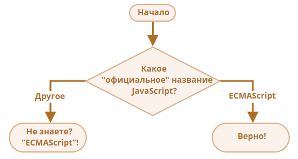

Используя конструкцию if..else, напишите код, который будет спрашивать: „Какое «официальное» название JavaScript?“
Если пользователь вводит «ECMAScript», то показать: «Верно!», в противном случае – отобразить: «Не знаете? ECMAScript!»

function whatOfficialName() {
const QUESTION = 'Какое «официальное» название JavaScript?';
const ANSWER = 'ECMAScript';
const RESPOND_TRUE = 'Верно!';
const RESPOND_FALSE = 'Не знаете? ECMAScript!';
const userAnswer = prompt(QUESTION, '');
if (userAnswer === ANSWER) {
alert(RESPOND_TRUE);
} else {
alert(RESPOND_FALSE);
}
}
Используя конструкцию if..else, напишите код, который получает число через prompt, а затем выводит в alert:
Предполагается, что пользователь вводит только числа.
function checkSign() {
const num = +prompt('Введите число');
if (num > 0) {
alert(1);
} else if (num < 0) {
alert(-1);
} else {
alert(0);
}
}
Перепишите конструкцию if с использованием условного оператора '?':
let result;
if (a + b < 4) {
result = 'Мало';
} else {
result = 'Много';
}
Перепишите if..else с использованием нескольких операторов '?'.
Для читаемости рекомендуется разбить код на несколько строк.
let message;
if (login == 'Сотрудник') {
message = 'Привет';
} else if (login == 'Директор') {
message = 'Здравствуйте';
} else if (login == '') {
message = 'Нет логина';
} else {
message = '';
}
const message = login === 'Сотрудник'
? 'Привет'
: login === 'Директор'
? 'Здравствуйте'
: login === ''
? 'Нет логина'
: '';
При помощи цикла for выведите чётные числа от 2 до 10.
function getEvens() {
let result = [];
for (let i = 2; i <= 10; i++) {
if (i % 2 === 0) {
result.push(i);
}
}
alert(result);
}
Перепишите код, заменив цикл for на while, без изменения поведения цикла.
for (let i = 0; i < 3; i++) {
alert( `number ${i}!` );
}
Напишите цикл, который предлагает prompt ввести число, большее 100. Если посетитель ввёл другое число – попросить ввести ещё раз, и так далее.
Цикл должен спрашивать число пока либо посетитель не введёт число, большее 100, либо не нажмёт кнопку Отмена (ESC).
Предполагается, что посетитель вводит только числа. Предусматривать обработку нечисловых строк в этой задаче необязательно.
let question = 'Введите число больше 100';
while (true) {
const value = prompt(question);
if (value > 100) {
alert('Правильно!');
break;
}
if (value === null) {
break;
}
question = 'Не правильно! Введите еще раз число больше 100';
}